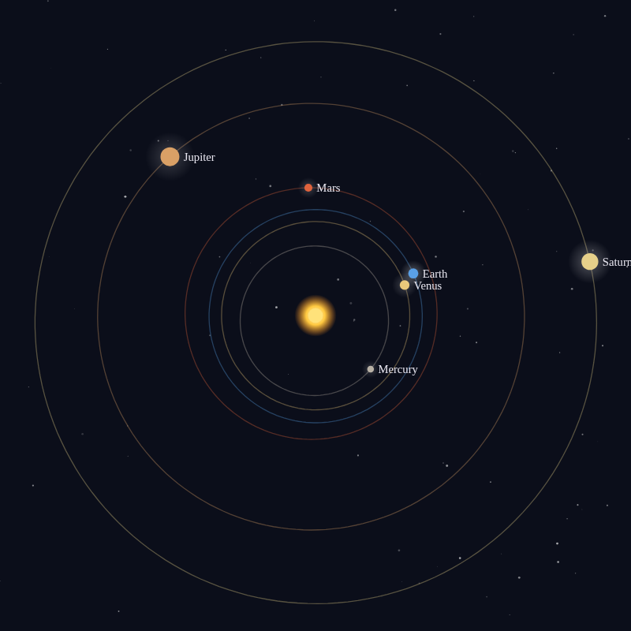

Where the idea comes from, and how Kepler turned it into astronomy.

The music of the spheres (musica universalis) is the ancient idea that the movements of the Sun, the Moon and the planets follow the same proportions as musical harmony.
It goes back to the Pythagoreans, who discovered that the pleasing intervals of music come from simple ratios: a string half as long sounds an octave higher (2:1), two thirds as long a fifth (3:2), three quarters as long a fourth (4:3). If number could explain music, they reasoned, it could explain the heavens too, and the planets, each on its own sphere, must sound a note as they turn. We don't hear it, one explanation went, because we have heard it since birth, as a blacksmith no longer hears his hammer.
These three kinds of music, named by Boethius around 500 CE, framed how the Middle Ages thought about music for a thousand years.
Johannes Kepler took the idea literally, and scientifically. In Harmonices Mundi, "The Harmony of the World" (1619), he looked for the music not in the sizes of the orbits but in the speeds of the planets. A planet moves fastest at perihelion, its closest point to the Sun, and slowest at aphelion, its farthest. Kepler compared the two angular speeds, as seen from the Sun, and found that their ratios were close to musical intervals: a major third for Saturn, a minor third for Jupiter, a fifth for Mars, a semitone for the Earth, a tiny diesis for Venus and more than an octave for Mercury.
So each planet sings not one note but a slide, up and down, once per orbit. The Earth, he noted, sings mi, fa, mi, and he could not resist a pun: miseria and fames, misery and famine, reign on our planet. In the same book, almost in passing, he stated what we now call his third law of planetary motion: the square of a planet's period is proportional to the cube of its distance from the Sun.
The planets move on their real, elliptical orbits (from NASA JPL's orbital elements, ignoring the tilt of the orbits), starting from today's positions, and time runs as fast as you set it. Each planet's pitch follows its angular speed around the Sun, as Kepler proposed. The true speeds are far too slow to hear, about one turn a year for the Earth, so every planet is moved up by whole octaves into its own register, as Kepler did too: that keeps the interval each one sings exact while putting Saturn in the bass and Mercury in the treble. The octave each planet sings in is a choice, not astronomy.